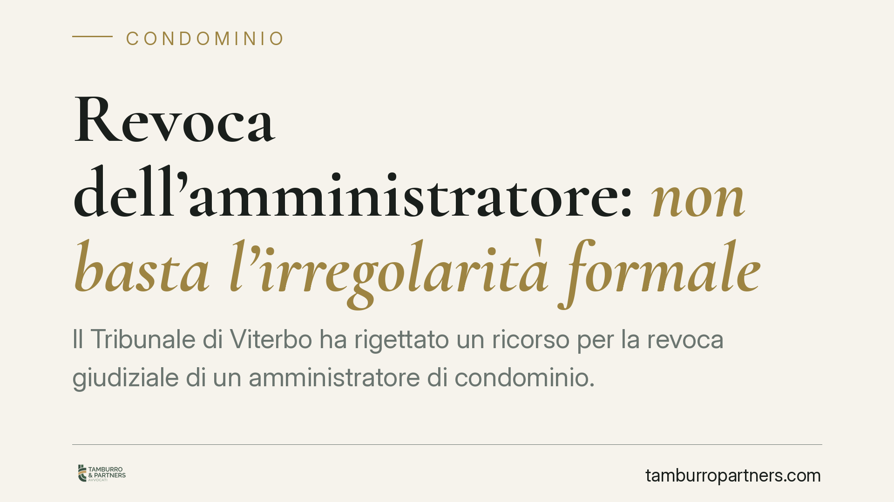

Revoca dell'amministratore: non basta l'irregolarità formale
Il Tribunale di Viterbo ha rigettato un ricorso per la revoca giudiziale di un amministratore di condominio. La decisione chiarisce un punto spesso frainteso: contestare una violazione formale non apre automaticamente la strada alla revoca. Occorre dimostrare una gestione scorretta e concretamente dannosa, capace di incrinare il rapporto di fiducia con i condòmini.

Il caso
Alcuni condòmini avevano chiesto al giudice la revoca dell'amministratore, una società, lamentando una serie di irregolarità nella gestione. Il Tribunale di Viterbo ha respinto il ricorso: le contestazioni, pur esistenti, non raggiungevano la soglia necessaria per giustificare l'intervento del giudice.
La pronuncia è utile perché affronta un equivoco diffuso. Molti ritengono che l'elenco di irregolarità previsto dalla legge funzioni come una lista automatica: segnalata la violazione, scatta la revoca. Non è così.
Inquadramento normativo
La revoca giudiziale dell'amministratore è disciplinata dall'art. 1129 del Codice civile. Il comma 11 individua alcune ipotesi tipizzate di "gravi irregolarità", tra cui la mancata convocazione dell'assemblea per l'approvazione del rendiconto, la gestione contabile opaca, la mancata apertura o utilizzo del conto corrente condominiale.
La norma, però, va letta nel suo insieme. La revoca è prevista "in caso di gravi irregolarità": l'aggettivo non è un dettaglio. Il legislatore richiede un comportamento che, per intensità e conseguenze, giustifichi l'estromissione anticipata del professionista dall'incarico.
Su questa linea si è mossa la giurisprudenza prevalente, confermata dal Tribunale di Viterbo: le irregolarità elencate dall'art. 1129 c.c. non operano in modo meccanico. Devono tradursi in una mala gestio — una cattiva amministrazione — concretamente lesiva per il condominio e tale da compromettere il rapporto fiduciario che lega l'amministratore all'assemblea.
Cosa significa in concreto
Il rapporto tra amministratore e condominio è, nella sua struttura, un rapporto di fiducia. L'amministratore gestisce denaro altrui, rappresenta il condominio verso l'esterno, esegue le delibere assembleari. La revoca giudiziale è lo strumento che interviene quando questa fiducia è irrimediabilmente venuta meno.
Per il giudice, quindi, la domanda non è soltanto "l'amministratore ha commesso un'irregolarità?", ma "quell'irregolarità ha prodotto un danno o un rischio tale da rendere intollerabile la prosecuzione dell'incarico?".
Ne deriva un onere probatorio preciso a carico dei condòmini ricorrenti. Non basta allegare la violazione: occorre dimostrarne la gravità e le ricadute. Un ritardo isolato nella convocazione, una contestazione contabile poi chiarita, un adempimento tardivo ma sanato difficilmente reggono da soli a fondare la revoca.
Per l'amministratore, la lettura è speculare. Un errore gestionale non equivale automaticamente alla perdita dell'incarico, ma l'accumulo di negligenze, l'opacità contabile sistematica o la violazione reiterata degli obblighi informativi costruiscono il quadro di una mala gestio che il giudice può sanzionare.
Il punto decisivo: la prova
La decisione di Viterbo sposta il baricentro sulla prova. Chi agisce per la revoca deve preparare un fascicolo solido: documentazione delle irregolarità, dimostrazione della loro persistenza, evidenza del pregiudizio economico o gestionale subito dal condominio.
Le affermazioni generiche o le contestazioni non documentate non superano il vaglio del giudice. La revoca è una misura incisiva, che interrompe un rapporto contrattuale in corso: coerentemente, il suo presupposto è rigoroso.
Cosa fare in concreto
- Documentate per iscritto. Ogni irregolarità va tracciata: verbali, richieste di accesso ai documenti rimaste inevase, comunicazioni formali all'amministratore. La prova si costruisce prima del ricorso, non durante.
- Verificate la gravità, non solo l'esistenza. Prima di agire, valutate se la violazione ha prodotto un danno concreto o un rischio serio per il condominio. Un'irregolarità sanata difficilmente regge in giudizio.
- Percorrete prima la via assembleare. L'assemblea può revocare l'amministratore con le maggioranze di legge, senza ricorrere al giudice. La revoca giudiziale resta lo strumento per i casi in cui quella strada è preclusa o insufficiente.
- Raccogliete le irregolarità in un quadro unitario. Più elementi coordinati dimostrano una gestione complessivamente scorretta meglio di una singola contestazione isolata.
- Fate valutare la posizione prima del deposito. Un ricorso rigettato comporta costi e consolida la posizione dell'amministratore. Consigliamo di sottoporre il caso a un legale per verificarne la sostenibilità.
Conclusione
La revoca giudiziale non è un automatismo. È una misura che richiede la prova di una gestione concretamente dannosa e di una fiducia ormai compromessa. Chi intende agire deve costruire con cura la propria posizione documentale.
---
*Contributo informativo a cura di Tamburro & Partners - Avv. Giuseppe Tamburro. Non costituisce parere legale.*
Ogni condominio ha una storia a sé.
Se gestisci un'amministrazione e vuoi un confronto su una specifica questione condominiale, scrivi allo studio. Ti rispondiamo entro un giorno lavorativo.